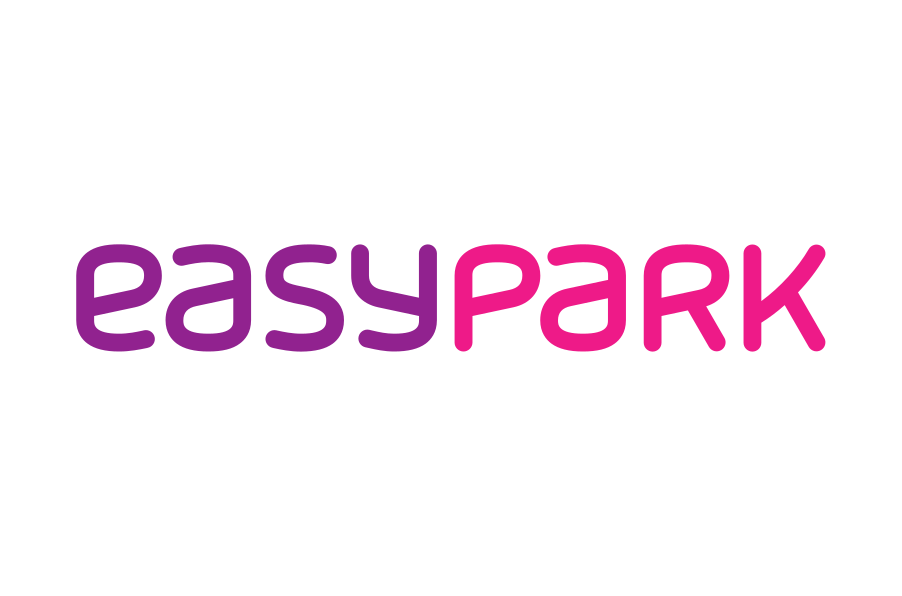

You know your industry like no one else and want to turn that knowledge into a digital product? As your development partner, I bring the technical expertise, with 20 years of experience in product development and team building plus a successful exit.

For over 20 years I've been building digital products and technology teams: more than 50 products, from MVP to scaled platform. For eight years I built and ran a 30-person development consultancy in Malaysia and sold it in 2023 to the Norwegian company Shortcut.
Today I work as a Founding Engineer for startups and corporate ventures. I help entrepreneurs and industry experts turn their domain knowledge into digital products.
Based in Berlin. Remote or on-site with you.
From idea to market-ready product. I design the architecture, pick the right tech stack, and do the development. Along the way, I keep your business goals in sight and proactively suggest solutions. The MVP is the beginning, not the end: I stay on board until the product has become a business.
Ongoing technical leadership without the full-time hire, as an interim CTO through a transition or as a fractional CTO for the long run: I set technical direction, recruit and lead your development team, and make sure the technical solution stays aligned with your business goals.
Your development team is moving on, your agency is stepping away, or you've taken over a product nobody fully understands? I assess the codebase, infrastructure, and technical debt, give you a clear picture of where things stand, and take over development from there.
AI where it pays off: automating workflows, making data usable, bringing AI features into your product. No hype, measurable results.
For clearly scoped work: a tech audit, an architecture decision, an MVP. Billed transparently by effort, with reliable estimates up front.
Ongoing technical support with a fixed monthly allocation. Most engagements are deliberately open-ended: I stay on board for as long as you need technical support.
For the right venture, I'll join as a co-founder: equity instead of fees, or alongside them. Then we're truly in the same boat.
The starting point: Parkling was founded as a venture of Centerbridge, majority shareholder of APCOA, Europe's largest parking infrastructure operator. The goal: collect on-street parking data and predict parking situations in cities.
My role as Founding Engineer:
The outcome: Parkling was acquired by PARK NOW, the joint venture of BMW Group and Daimler Mobility, which in turn was acquired by EasyPark in 2021. The venture became a leading provider of on-street parking data.
At two companies I built, Robert was the technical pillar in the early phase. Robert doesn't just think technically but also strategically, and he grasps the founder's vision much like a co-founder would. The combination of his speed and pragmatism is a huge help, especially in a founding phase.
Neon Roots has worked with Robert for over two years on hard hitting projects. […] I would recommend anyone to give [him] a shot.
Then let's talk. Whether it's a venture idea, technical leadership, or an honest second opinion: send me a message or schedule an intro call right away. No strings attached.